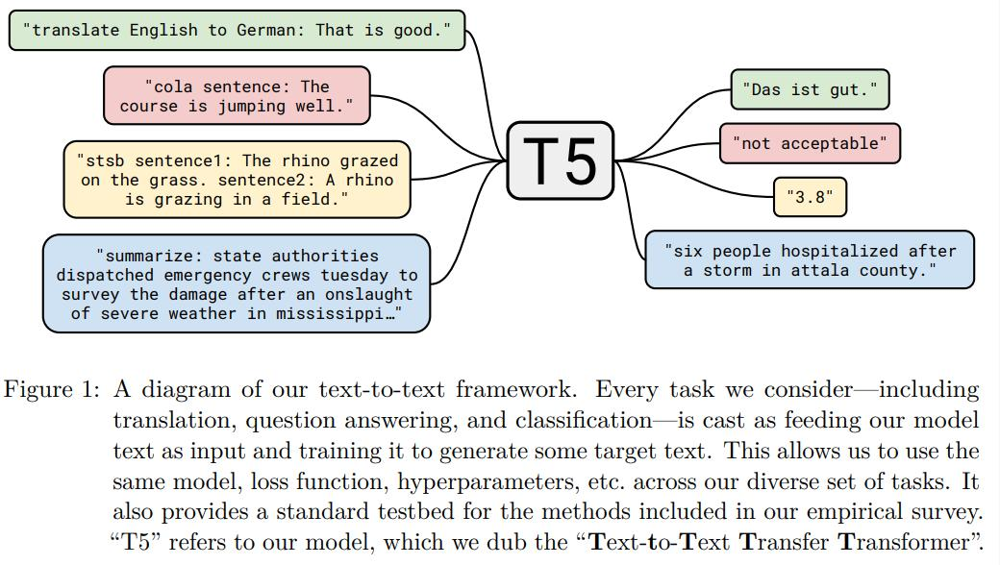
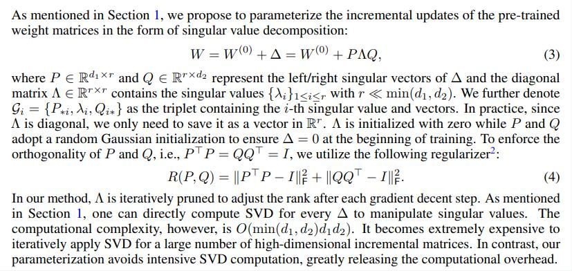
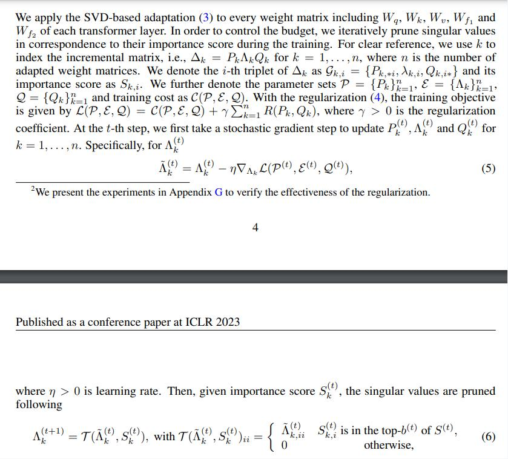
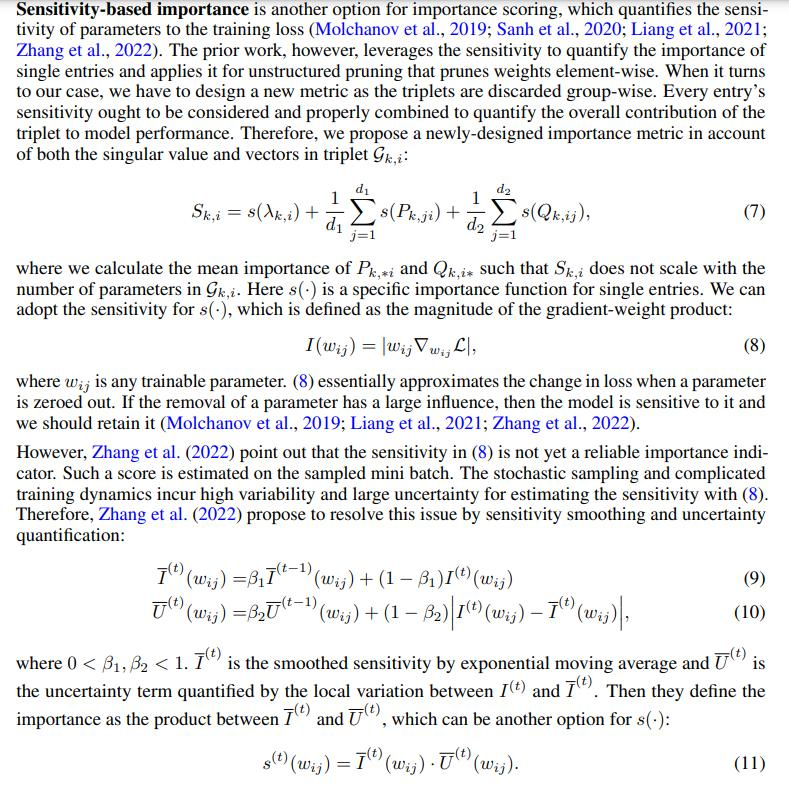

BERT: Pre-training of Deep Bidirectional Transformers for Language Understanding
https://arxiv.org/pdf/1810.04805.pdf


GPT1：Improving Language Understanding by Generative Pre-Training
https://www.cs.ubc.ca/~amuham01/LING530/papers/radford2018improving.pdf
GPT2：Language Models are Unsupervised Multitask Learners
https://d4mucfpksywv.cloudfront.net/better-language-models/language-models.pdf
GPT3：Language Models are Few-Shot Learners
https://arxiv.org/pdf/2005.14165.pdf
InstructGPT：Training language models to follow instructions with human feedback
https://arxiv.org/pdf/2203.02155.pdf
GPT1:
自回归方式训练，预训练阶段窗口设置，需要主要的是fune-tuning时，损失函数包含预训练损失
GPT2：
堆数据，堆网络参数，网络norm层有变化
GPT3：

模型使用spare attention, 175B参数
InstructGPT
BART: Denoising Sequence-to-Sequence Pre-training for Natural Language Generation, Translation, and Comprehension
https://arxiv.org/pdf/1910.13461.pdf


Fine-Tuning：
在做machine translation时，先预训练参数，只更新initialized encoder参数，后完全更新参数。

Exploring the Limits of Transfer Learning with a Unified Text-to-Text Transformer
https://arxiv.org/pdf/1910.10683.pdf

添加前缀
Unified Language Model Pre-training for Natural Language Understanding and Generation
https://arxiv.org/pdf/1905.03197.pdf
LLaMA: Open and Efficient Foundation Language Models
https://arxiv.org/pdf/2302.13971.pdf
Llama 2: Open Foundation and Fine-Tuned Chat Models
https://arxiv.org/pdf/2307.09288.pdf
LLaMA-1：
LLaMA-2：
有监督微调（Supervised Finetuning, SFT）又称指令微调（Instruction Tuning），是指在已经训练好的语言模型的基础上，通过使用有标注的特定任务数据进行进一步的微调，从而使得模型具备遵循指令的能力。经过海量数据预训练后的语言模型虽然具备了大量的“知识”，但是由于其训练时的目标仅是进行下一个词的预测，此时的模型还不能够理解并遵循人类自然语言形式的指令。

微调技术综述：
Scaling Down to Scale Up: A Guide to Parameter-Efficient Fine-Tuning
https://arxiv.org/pdf/2303.15647.pdf
只调节神经网络的bias参数

论文：
BitFit: Simple Parameter-efficient Fine-tuning for Transformer-based Masked Language-models
https://arxiv.org/pdf/2106.10199v2.pdf
代码：
for name, param in model.named_parameters():
if "bias" not in name:
param.requires_grad = False

论文：
The Power of Scale for Parameter-Efficient Prompt Tuning
https://arxiv.org/pdf/2104.08691.pdf
算法原理：
当输入是
Design Decision:
代码：
from peft import PromptTuningConfig, get_peft_model, TaskType, PromptTuningInit
# Soft Prompt
# config = PromptTuningConfig(task_type=TaskType.CAUSAL_LM, num_virtual_tokens=10)
# config
# Hard Prompt
config = PromptTuningConfig(
task_type=TaskType.CAUSAL_LM,
prompt_tuning_init=PromptTuningInit.TEXT,
prompt_tuning_init_text="下面是一段人与机器人的对话。", num_virtual_tokens=len(tokenizer("下面是一段人与机器人的对话。")["input_ids"]),
tokenizer_name_or_path="Langboat/bloom-1b4-zh")
model = get_peft_model(model, config)
# inference
from peft import PeftModel
peft_model = PeftModel.from_pretrained(model=model, model_id="./chatbot/checkpoint-500/")
peft_model = peft_model.cuda()
ipt = tokenizer("Human: {}\n{}".format("考试有哪些技巧？", "").strip() + "\n\nAssistant: ", return_tensors="pt").to(peft_model.device)
print(tokenizer.decode(peft_model.generate(**ipt, max_length=128, do_sample=True)[0], skip_special_tokens=True))
论文：
GPT Understands, Too
https://arxiv.org/pdf/2103.10385.pdf
P-Tuning v2: Prompt Tuning Can Be Comparable to Fine-tuning Universally Across Scales and Tasks
https://arxiv.org/pdf/2110.07602.pdf
原理：
论文：
Prefix-Tuning: Optimizing Continuous Prompts for Generation
https://arxiv.org/pdf/2101.00190.pdf
原理：

代码：
from peft import PrefixTuningConfig, get_peft_model, TaskType
config = PrefixTuningConfig(task_type=TaskType.CAUSAL_LM, num_virtual_tokens=10, prefix_projection=True)
model = get_peft_model(model, config)
# 核心代码
if peft_config.peft_type == PeftType.PREFIX_TUNING:
past_key_values = self.get_prompt(batch_size)
return self.base_model(
input_ids=input_ids, inputs_embeds=inputs_embeds, past_key_values=past_key_values, **kwargs
)
class PrefixEncoder(torch.nn.Module):
r"""
The `torch.nn` model to encode the prefix.
Args:
config ([`PrefixTuningConfig`]): The configuration of the prefix encoder.
Example:
```py
>>> from peft import PrefixEncoder, PrefixTuningConfig
>>> config = PrefixTuningConfig(
... peft_type="PREFIX_TUNING",
... task_type="SEQ_2_SEQ_LM",
... num_virtual_tokens=20,
... token_dim=768,
... num_transformer_submodules=1,
... num_attention_heads=12,
... num_layers=12,
... encoder_hidden_size=768,
... )
>>> prefix_encoder = PrefixEncoder(config)
**Attributes**:
- **embedding** (`torch.nn.Embedding`) -- The embedding layer of the prefix encoder.
- **transform** (`torch.nn.Sequential`) -- The two-layer MLP to transform the prefix embeddings if
`prefix_projection` is `True`.
- **prefix_projection** (`bool`) -- Whether to project the prefix embeddings.
Input shape: (`batch_size`, `num_virtual_tokens`)
Output shape: (`batch_size`, `num_virtual_tokens`, `2*layers*hidden`)
"""
def __init__(self, config):
super().__init__()
self.prefix_projection = config.prefix_projection
token_dim = config.token_dim
num_layers = config.num_layers
encoder_hidden_size = config.encoder_hidden_size
num_virtual_tokens = config.num_virtual_tokens
if self.prefix_projection and not config.inference_mode:
# Use a two-layer MLP to encode the prefix
self.embedding = torch.nn.Embedding(num_virtual_tokens, token_dim)
self.transform = torch.nn.Sequential(
torch.nn.Linear(token_dim, encoder_hidden_size),
torch.nn.Tanh(),
torch.nn.Linear(encoder_hidden_size, num_layers * 2 * token_dim),
)
else:
self.embedding = torch.nn.Embedding(num_virtual_tokens, num_layers * 2 * token_dim)
def forward(self, prefix: torch.Tensor):
if self.prefix_projection:
prefix_tokens = self.embedding(prefix)
past_key_values = self.transform(prefix_tokens)
else:
past_key_values = self.embedding(prefix)
return past_key_values
if peft_config.peft_type == PeftType.PREFIX_TUNING:
prompt_tokens = prompt_tokens[:, : peft_config.num_virtual_tokens]
if peft_config.inference_mode:
past_key_values = prompt_encoder.embedding.weight.repeat(batch_size, 1, 1)
else:
past_key_values = prompt_encoder(prompt_tokens)
if self.base_model_torch_dtype is not None:
past_key_values = past_key_values.to(self.base_model_torch_dtype)
past_key_values = past_key_values.view(
batch_size,
peft_config.num_virtual_tokens,
peft_config.num_layers * 2,
peft_config.num_attention_heads,
peft_config.token_dim // peft_config.num_attention_heads,
)
if peft_config.num_transformer_submodules == 2:
past_key_values = torch.cat([past_key_values, past_key_values], dim=2)
past_key_values = past_key_values.permute([2, 0, 3, 1, 4]).split(
peft_config.num_transformer_submodules * 2
)
if TRANSFORMERS_MODELS_TO_PREFIX_TUNING_POSTPROCESS_MAPPING.get(self.config.model_type, None) is not None:
post_process_fn = TRANSFORMERS_MODELS_TO_PREFIX_TUNING_POSTPROCESS_MAPPING[self.config.model_type]
past_key_values = post_process_fn(past_key_values)
return past_key_values
论文：
LORA: LOW-RANK ADAPTATION OF LARGE LANGUAGE MODELS
https://arxiv.org/pdf/2106.09685.pdf
AdaLoRA: ADAPTIVE BUDGET ALLOCATION FOR PARAMETEREFFICIENT FINE-TUNING
https://arxiv.org/pdf/2303.10512.pdf
https://github.com/QingruZhang/AdaLoRA
QLORA: Efficient Finetuning of Quantized LLMs
https://arxiv.org/pdf/2305.14314.pdf
原理：
lora：
初始时，

adalora：
训练过程：
损失函数及参数更新：


三元组参数重要重要性计算：

qlora：

代码：
from peft import LoraConfig, TaskType, get_peft_model
config = LoraConfig(task_type=TaskType.CAUSAL_LM, target_modules=[".*\.1.*query_key_value"], modules_to_save=["word_embeddings"])
Few-Shot Parameter-Efficient Fine-Tuning is Better and Cheaper than In-Context Learning
https://arxiv.org/pdf/2205.05638.pdf
论文:
Parameter-Efficient Transfer Learning for NLP
https://arxiv.org/pdf/1902.00751.pdf
AdapterFusion:Non-Destructive Task Composition for Transfer Learning
https://arxiv.org/pdf/2005.00247.pdf
MAD-X: An Adapter-Based Framework for Multi-Task Cross-Lingual Transfer
原理：

def feedforward_adapter(input_tensor, hidden_size=64, init_scale=1e-3):
"""A feedforward adapter layer with a bottleneck.
Implements a bottleneck layer with a user-specified nonlinearity and an
identity residual connection. All variables created are added to the
"adapters" collection.
Args:
input_tensor: input Tensor of shape [batch size, hidden dimension]
hidden_size: dimension of the bottleneck layer.
init_scale: Scale of the initialization distribution used for weights.
Returns:
Tensor of the same shape as x.
"""
with tf.variable_scope("adapters"):
in_size = input_tensor.get_shape().as_list()[1]
w1 = tf.get_variable(
"weights1", [in_size, hidden_size],
initializer=tf.truncated_normal_initializer(stddev=init_scale),
collections=["adapters", tf.GraphKeys.GLOBAL_VARIABLES])
b1 = tf.get_variable(
"biases1", [1, hidden_size],
initializer=tf.zeros_initializer(),
collections=["adapters", tf.GraphKeys.GLOBAL_VARIABLES])
net = tf.tensordot(input_tensor, w1, [[1], [0]]) + b1
net = gelu(net)
w2 = tf.get_variable(
"weights2", [hidden_size, in_size],
initializer=tf.truncated_normal_initializer(stddev=init_scale),
collections=["adapters", tf.GraphKeys.GLOBAL_VARIABLES])
b2 = tf.get_variable(
"biases2", [1, in_size],
initializer=tf.zeros_initializer(),
collections=["adapters", tf.GraphKeys.GLOBAL_VARIABLES])
net = tf.tensordot(net, w2, [[1], [0]]) + b2
return net + input_tensor
adapterFusion
knowledge composition step


model = BertModelWithHeads.from_pretrained("bert-base-uncased")
model.load_adapter("nli/multinli@ukp", load_as="multinli", with_head=False)
model.load_adapter("sts/qqp@ukp", with_head=False)
model.load_adapter("nli/qnli@ukp", with_head=False)
model.add_classification_head("cb")
adapter_setup = Fuse("multinli", "qqp", "qnli")
model.add_fusion(adapter_setup)
model.set_active_adapters(adapter_setup)
model.train_fusion(adapter_setup)
MAD-X
https://zhuanlan.zhihu.com/p/595579042
Learning Transferable Visual Models From Natural Language Supervision
https://arxiv.org/pdf/2103.00020.pdf
High-Resolution Image Synthesis with Latent Diffusion Models
https://arxiv.org/pdf/2112.10752.pdf
Adding Conditional Control to Text-to-Image Diffusion Models
https://arxiv.org/pdf/2302.05543.pdf
Photorealistic Text-to-Image Diffusion Models with Deep Language Understanding
https://arxiv.org/pdf/2205.11487.pdf
https://arxiv.org/pdf/2208.12242.pdf